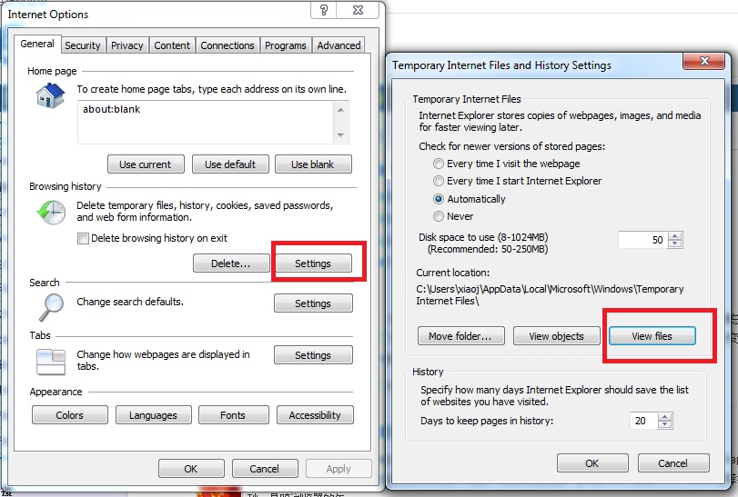
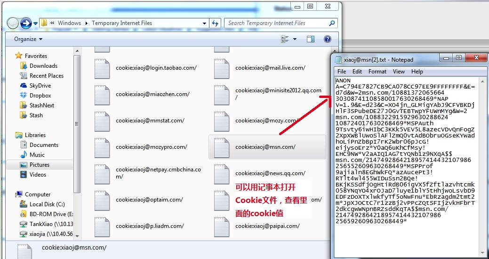
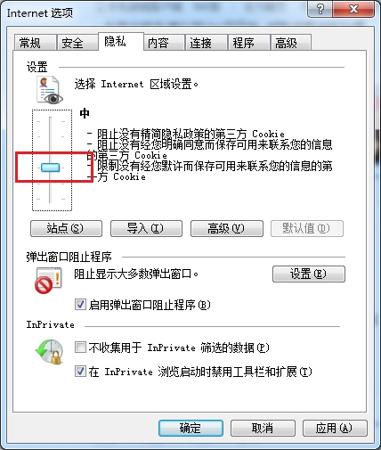
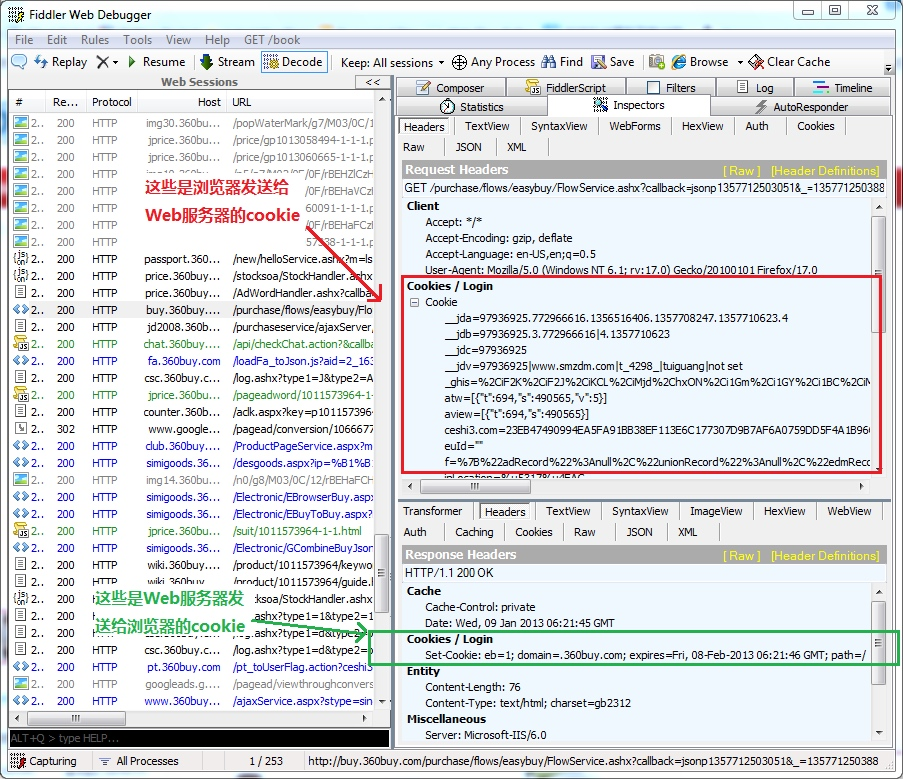
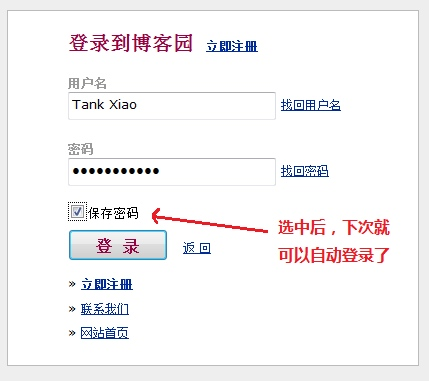
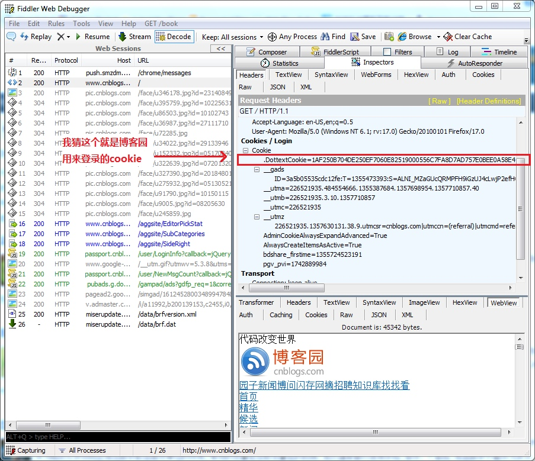
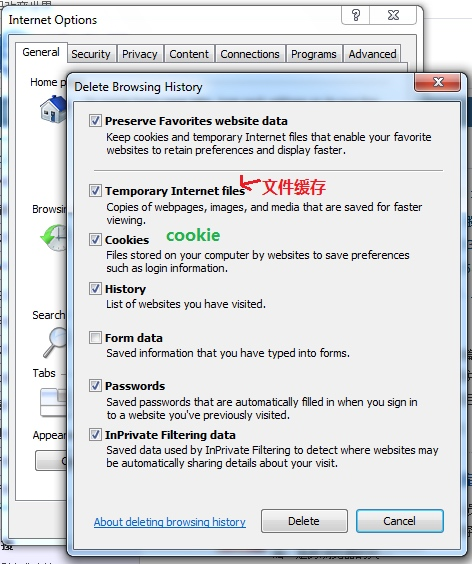

HTTP协议 (七) Cookie
Cookie是HTTP协议中非常重要的东西， 之前拜读了Fish Li 写的细说Cookie， 让我学到了很多东西。Fish的这篇文章写得太经典了。 所以我这篇文章就没有太多内容了。
最近我打算写一个系列的HTTP文章，我站在HTTP协议的角度， 说说我对Cookie的理解。
Cookie是什么，有什么用，为什么要用到Cookie
请看Fish Li 写的细说Cookie
Cookie的分类
可以大致把Cookie分为2类： 回话cookie和持久cookie
会话cookie: 是一种临时的cookie，它记录了用户访问站点时的设置和偏好，关闭浏览器，会话cookie就被删除了
持久cookie: 存储在硬盘上，（不管浏览器退出，或者电脑重启，持久cookie都存在）， 持久cookie有过期时间
Cookie存在哪里
Cookie是存在硬盘上， IE存cookie的地方和Firefox存cookie的地方不一样。 不同的操作系统也可能存cookie的地方不一样。
不同的浏览器会在各自的独立空间存放Cookie, 互不干涉
以我的windows7， IE8为例， cookie存在这： C:\Users\xiaoj\AppData\Local\Microsoft\Windows\Temporary Internet Files
注意： 缓存文件和cookie文件，是存在一起的, 都在这个目录下。
你也可以这样找, 打开IE，点击Tools->Internet Options->General Tab下的->Browsing history下的Setting按钮，弹出的对话框中点击View files.

不同的网站会有不同的cookie文件

使用和禁用Cookie
IE: 工具->Internet 选项 -> 隐私

Fiddler查看HTTP中的Cookie
浏览器把cookie通过HTTP Request 中的“Cookie: header”发送给Web服务器
Web服务器通过HTTP Response中的"Set-Cookie: header"把cookie发送给浏览器
使用Fiddler可以清楚地看到cookie在HTTP中传递。 Fiddler工具中可以清晰的看到Http Request 中的Cookie， 和Http Response中的cookie
实例： 启动Fiddler, 启动浏览器访问一些购物网站，就可以看到。

网站自动登陆的原理
我们以”博客园自动登陆“的例子，来说明cookie是如何传递的。
大家知道博客园是可以自动登陆的。 如下图，这个是什么原理呢?

假如我已经在登陆页面输入了用户名，密码，选择了保存密码，登陆。（这时候，其实在你的机器上保存好了登陆的cookie, 不信你可以按照上节介绍方法去你的电脑上找下博客园的cookie）
当我下次访问博客园流程如下。
- 用户打开IE浏览器，在地址栏上输入www.cnblogs.com.
- IE首先会在硬盘中查找关于cnblogs.com的cookie. 然后把cookie放到HTTP Request中，再把Request发给Web服务器。
- Web服务器返回博客园首页（你会看到你已经登陆了）。

截获Cookie，冒充别人身份
通过上面这个例子，可以看到cookie是很重要的，识别是否是登陆用户，就是通过cookie。 假如截获了别人的cookie是否可以冒充他人的身份登陆呢？ 当然可以， 这就是一种黑客技术叫Cookie欺骗。
利用Cookie 欺骗， 不需要知道用户名密码。就可以直接登录，使用别人的账户做坏事。
我知道有两种方法可以截获他人的cookie，
- 通过XSS脚步攻击， 获取他人的cookie. 具体原理可以看 [Web安全性测试之XSS]
- 想办法获取别人电脑上保存的cookie文件（这个比较难）
拿到cookie后，就可以冒充别人的身份了。 这个过程我就不演示了。
Cookie和文件缓存的区别
很多人会把cookie和文件缓存弄混淆， 这两个完全是不一样的东西。唯一的相同之处可能是它们俩都存在硬盘上，而且是存在同一个文件夹下。
关于HTTP缓存请看这 【HTTP协议之缓存】
我们在IE中可以选择分别删除Cookie和缓存文件

Cookie 泄露隐私
2013年央视的315晚会上， 曝光了很多不法公司利用Cookie跟踪并采集用户的个人信息，并转卖给网络广告商，形成了一条窃取用户信息的灰色产业链。从而实现广告准确投放。严重干扰了用户的正常网络应用，侵害了个人的隐私和利益。
我经常就在门户网站上发现广告位上显示的是我在电商网站上流量过的商品。 这就是我的cookie被泄露了。
目前在欧洲， 已经对Cookie立法， 如果网站需要保存用户的cookie, 必须弹出一个对话框，要用户确认后才能保存Cookie.
P3P协议
从上面看来， Cookie 是一个比较容易泄露用户隐私和危险的东西。 有没有办法保护个人用户隐私呢？ 那就是P3P协议
P3P是一种被称为个人隐私安全平台项目（the Platform for Privacy Preferences）的标准，能够保护在线隐私权，使Internet冲浪者可以选择在浏览网页时，是否被第三方收集并利用自己的个人信息。如果一个 站点不遵守P3P标准的话，那么有关它的Cookies将被自动拒绝，并且P3P还能够自动识破多种Cookies的嵌入方式。p3p是由全球资讯联盟网 所开发的。